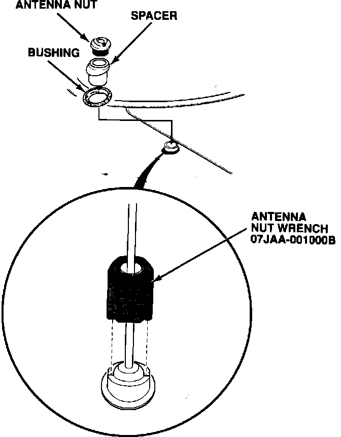
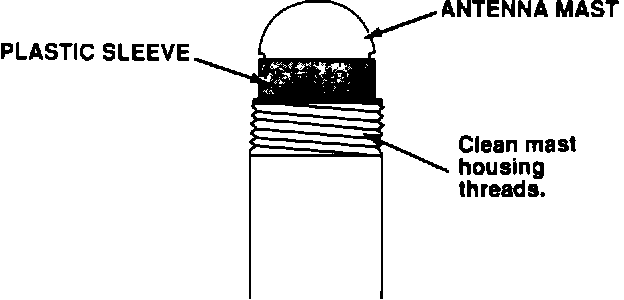

Antenna - Sticks
90acura01YEAR MODEL VIN APPLICATION
1989 LEGEND ALL
SEDAN & COUPE
June 4, 1990
BULLETIN NO.
89-019

Sticking Antenna (Supersedes 89-019, dated December 18, 1989)
PROBLEM
The antenna sticks in either the up or down position.
CORRECTIVE ACTION
1. To protect the fender, cut a hole the size of the antenna nut in a piece of material such as outdoor carpet, card board, etc., and put it over the antenna nut.
2. Using the Antenna Nut Wrench (see PARTS INFORMATION), remove the antenna nut, spacer, bushing, and the antenna mast (see service manual).
NOTE: You don't have to remove the power antenna motor to remove the antenna mast.
If corrosion has occurred between the antenna nut and mast housing threads, apply rust penetrant before removing the antenna nut. In severe cases the antenna nut wrench may not remove the nut, so vise-grips will be required.

3. Clean the antenna mast housing threads and reinstall the spacer and bushing.
4. Install a new antenna mast and nut (see PARTS INFORMATION).
5. Use the Antenna Nut Wrench and a torque wrench; torque the antenna nut to 20 lbs.in.
6. Check that the antenna mast retracts and extends fully when the radio is turned on and off repeatedly.
NOTE: If the antenna nut is over-torqued, the antenna may stick. If sticking occurs, reduce the torque level until the antenna moves freely.
PARTS INFORMATION
Antenna mast
and nut P/N: 06391-SG0-A00
Antenna Nut
Wrench T/N: 07JAA-001000B
WARRANTY CLAIM INFORMATION
In warranty: The normal warranty applies. Out-of-Warranty: Any repair performed after warranty expiration may be eligible for goodwill consideration by the District Service Manager. You must request consideration, and get the DSM's decision, before starting work.
Operation number: 015120
Flat rate time: 0.5 hr
Failed P/N: 39152-SD4-A03
Defect code: 030
Contention code: B99